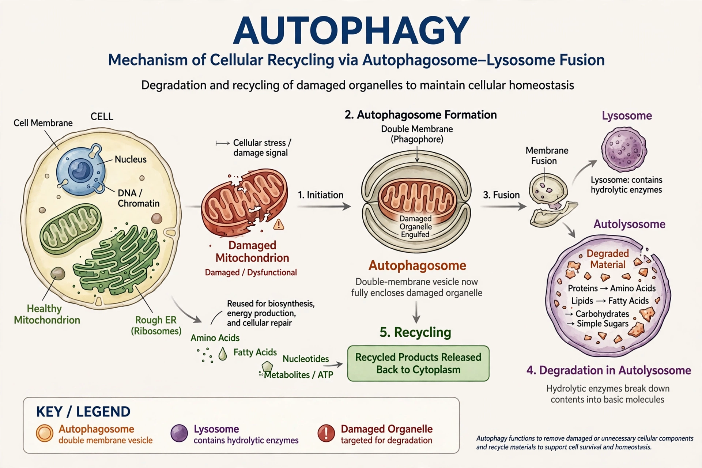

Autophagy (from Greek auto- 'self' and phagein 'to eat') is a conserved lysosome-mediated catabolic process by which cells degrade and recycle their own components — damaged organelles, misfolded proteins, and pathogens — enclosed in double-membrane vesicles called autophagosomes.

Macroautophagy is the main pathway; microautophagy involves direct lysosomal engulfment, and chaperone-mediated autophagy transports specific proteins across the lysosomal membrane. Mitophagy selectively clears damaged mitochondria.
The process is controlled by ATG genes, first characterised in yeast by Yoshinori Ohsumi, who received the 2016 Nobel Prize in Physiology or Medicine for his discoveries of mechanisms for autophagy. Nutrient starvation and mTOR inhibition induce autophagy; the phagophore expands, seals into an autophagosome, fuses with a lysosome, and its contents are digested and recycled.
Autophagy maintains cellular homeostasis, supports immunity and development, and is implicated in cancer, neurodegeneration, infection, ageing, and metabolic disease. Both defective and excessive autophagy can be harmful, making it a major drug target.
Lysosome · Yoshinori Ohsumi · Autolysis
Recreated from memory.